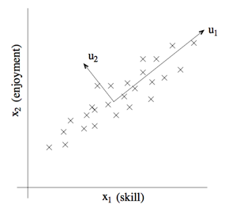
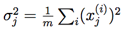
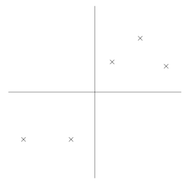
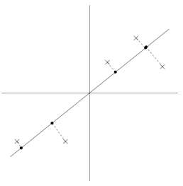
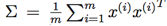
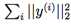

CS229
Lecture notes
翻译：CycleUser
Part XI
主成分分析（Principal components analysis）
前面我们讲了因子分析（factor
analysis），其中在某个 k 维度子空间对 x ∈ Rn 进行近似建模，k 远小于 n，即 k ≪ n。具体来说，我们设想每个点 x(i) 用如下方法创建：首先在 k 维度仿射空间（affine space） {Λz
+ μ; z ∈ Rk} 中生成某个 z(i) ，然后增加 Ψ-协方差噪音（covariance noise）。因子分析（factor analysis）是基于一个概率模型（probabilistic model），然后参数估计（parameter estimation）使用了迭代期望最大化算法（iterative EM algorithm）。
在本章讲义中，我们要学习一种新的方法，主成分分析（Principal Components Analysis，缩写为 PCA），这个方法也是用来对数据近似（approximately）所处的子空间（subspace）进行判别（identify）。然而，主成分分析算法（PCA）会更加直接，只需要进行一种特征向量（eigenvector）计算（在 Matlab 里面可以通过 eig 函数轻松实现），并且不需要再去使用期望最大化（EM）算法。
假如我们有一个数据集 {x(i); i = 1, . . ., m}，其中包括了 m 种不同汽车的属性，例如最大速度（maximum speed），转弯半径（turn radius）等等。设其中每个 i 都有 x(i) ∈ Rn，(n ≪ m)。但对于两个不同的属性，例如 xi 和 xj，对应着以英里每小时（mph）为单位的最高速度和以公里每小时（kph）为单位的最高速度。因此这两个属性应该基本是线性相关（linearly dependent）的，只在对 mph 和 kph 进行四舍五入时候会有引入一些微小差异。所以，这个数据实际上应该是近似处于一个 n-1 维度的子空间中的。我们如何自动检测和删除掉这一冗余（redundancy）呢？
举一个不那么麻烦的例子，设想有一个数据集，其中包含的是对一个无线电遥控直升机（radio-controlled helicopters）飞行员协会进行调查得到的数据，其中的 x1 (i) 指代的是飞行员 i 的飞行技能的度量，而 x2 (i) 指代的是该飞行员对飞行的喜爱程度。无线电遥控直升机是很难操作的，只有那些非常投入，并且特别热爱飞行的学生，才能成为好的飞行员。所以，上面这两个属性 x1 和 x2 之间的相关性是非常强的。所以我们可以认为在数据中沿着对角线方向（也就是下图中的 u1 方向）表征了一个人对飞行投入程度的内在“源动力（karma）”，只有少量的噪音脱离这个对角线方向。如下图所示，我们怎么来自动去计算出 u1 的方向呢？

我们接下来很快就要讲到主成分分析算法（PCA algorithm）了。但在运行 PCA 之前，我们首先要进行一些预处理（pre-process），正则化（normalize）数据的均值（mean）和方差（variance），如下所示：
1. 设 
2. 将每个 x(i) 替换成 x(i) − μ.
3. 设
4. 将每个 x(i) 替换成 x(i)/σj.
第（1-2）步把数据的平均值清零（zero out），然后可以省略掉所有有零均值的数据（例如，对应语音或者其他声学信号的时间序列）。第（3-4）步将每个坐标缩放，使之具有单位方差（unit variance），这确保了不同的属性（attributes）都在同样的“尺度（scale）”上来进行处理。例如，如果 x1 是汽车的最大速度（以 mph 为单位，精确到十位），然后 x2 是汽车的座位数量（取值一般在 2-4），这样这个重新正则化（renormalization）就把不同的属性（attributes）进行了缩放（scale），然后这些不同属性就更具有对比性（more comparable）。如果我们事先已经知道不同的属性在同一尺度上，就可以省略第（3-4）步。例如，如果每个数据点表示灰度图像（grayscale image）中的每个数据点，而每个 x j (i) 就从 {0, 1, . . . , 255} 中取值，对应的也就是在图像 i 中像素 j 位置的灰度值（intensity value）。
接下来，进行了正则化之后，对数据近似所处的方向，也就是“主要变异轴（major axis of variation）”u，该如何去计算呢？一种方法是找出一个单位向量（unit vector）u，使得数据投影在 u 的方向上的时候，投影的数据的方差（variance）最大。
直观来看，在这个方向上，数据开始有一定规模的方差（variance）/信息量（information）。我们要选择的是这样一个方向的单位向量 u：数据能近似投放到与单位向量 u 一致的方向（direction）/子空间（subspace），并且尽可能多地保留上面的方差（variance）。
设下面的数据集，我们已经进行了正则化步骤（normalization steps）：

现在，加入我们选择的单位向量 u 对应了下图中所示的方向。下图中的圆点表示的就是原始数据在这条线上面的投影（projections）。

可以看到，上面投影得到的数据依然有还算比较大的方差，而这些点距离零点也都比较远。反面样本则如下图所示，我们选择了另外一个方向的单位向量：

上面这幅图的投影中的方差就明显小了很多，而且投影得到的点位置也距离原点更近很多。
我们希望能自动地选择出来如上面两幅图中第一幅那样的方向的单位向量 u。要对这个过程进行方程化（formalize），要注意到给定一个向量 u 和一个点 x，x 投影到 u 上的投影长度就可以用 xT u 来得到。也就是说，如果 x(i) 是我们数据集中的一个点（上面几个图中画叉的 x 点中的一个），那么这个点在 u 上的投影（对应的是图中的圆点）就是从原点到 xT u 的距离。因此，要最大化投影的方差，就要找到一个能够将下面式子最大化的单位长度向量 u：

We easily recognize that the maximizing this subject to
||u||2 =
1 gives the principal eigenvector of  ,
which is just the empirical covariance matrix of the data (assuming it has zero
mean).1
,
which is just the empirical covariance matrix of the data (assuming it has zero
mean).1
很容易就能发现，要让上面的式子最大化，||u||2 = 1 给出了 的主特征向量（principal eigenvector），而这也正好就是数据的经验协方差矩阵（假设有零均值）。1
总结一下，如果我们要找一个 1维度子控件来近似数据，就要选择 Σ 的主特征向量（principal
eigenvector）作为单位向量 u。更广义地理解，就是如果要讲数据投影到一个 k 维度子空间（k < n），就应当选择 Σ 的 k 个特征向量（eigenvectors） 来作为单位向量 u1, . . ., uk。这里的 ui 就形成了数据的一组新的正交基（orthogonal basis）。2
然后，要使用这组正交基来表示 x(i)，只需要计算对应的向量：

因此，x(i) ∈ Rn，向量 y(i)
就是对 x(i) 的近似/表示。因此，主成分分析算法（PCA）也被称为是一种维度降低算法（dimensionality reduction algorithm）。而其中的单位向量 u1,...,uk 也就叫做数据集的前 k 个主成分（principal components）。
备注。虽然我们已经正式表述了，仅当 k = 1的情况下，使用特征向量（eigenvectors）的众所周知的特性，很明显，在所有可能的正交基（orthogonal bases）当中，我们选择的那一组就能使得取最大值。因此，我们对基向量（basis）的选择应当是尽可能保留原始数据的方差信息（variability）。
在习题集 4 中，你会发现主成分分析算法（PCA）也可以有另外一种推导方式：将数据投影到数据所张成的 k 维度子空间中，选择一组基向量，使得投影引起的近似误差（approximation error）最小。
主成分分析算法（PCA）有很多用法；我们接下来收尾这部分就来给出若干样例。首先是压缩—用更低维度的 y(i) 来表示 x(i) ，这很明显就是一种用途了。如果我们把高维度的数据降维到 k = 2 或者 3，那么就可以将 y(i) 进行可视化了。例如，如果我们把汽车数据降维到 2 维，那么就可以把压缩后的数据投图（例如这时候投图中的一二点可能就代表了骑车的类型），来看看哪些车彼此相似，以及这些车可以聚集成那些组。
另一个常用应用就是在使用 x(i) 作为输入特征进行监督学习算法（supervised learning algorithm）之前降低数据维度的预处理步骤。除了有利于缓解计算性能压力之外，降低数据维度还可以降低假设类（hypothesis class）的复杂度（complexity），然后避免过拟合（overfitting）（例如，低维度的输入特征控件上的线性分类器（linear classifiers）会有更小的 VC 维度）。
最后，正如在遥控直升机飞行员那个样例，我们可以把 PCA 用作为一种降噪算法（noise
reduction algorithm）。在那个例子中，算法从对遥控飞行技巧和热爱程度的有噪音的衡量中估计了直观的“遥控飞行原动力（piloting karma）”。在课程中，我们还看到了把这种思路用于人脸图像，得到的就是面部特征算法（eigenface method）。其中每个点 x(i) ∈ R100×100 都是一个 10000 维度的向量，每个坐标对应的是一个 100x100 的人脸图像中的一个像素灰度值。使用主特征分析算法（PCA），我们就可以用更低维度的 y(i) 来表示每个图像 x(i)。在这个过程中，我们希望主成分（principal components）能够保存有趣的信息、面孔之间的系统变化（systematic variations），一遍能捕获到一个人看上去的模样，而不是由于细微的光线变化、轻微的拍摄状况差别等而引起的图像中的“噪音（noise）”。然后我们通过降低纬度然后计算 ||y(i) − y(j)||2 来测量面孔 i 和 j 之间的距离。这样就能得到一个令人惊艳的面部匹配和检索算法（face-matching and retrieval algorithm）。
1如果以前没见到过这种形式，可以用拉格朗日乘数法将 uT Σu 最大化，使得 uT u = 1。你应该能发现对于某些 λ，Σu = λu，这就意味着向量 u 是 Σ 的特征向量（eigenvector），特征值（eigenvalue）为 λ。
2由于 Σ 是对称的，所以向量 ui 就总是（或者总能选出来）彼此正交的（orthogonal）